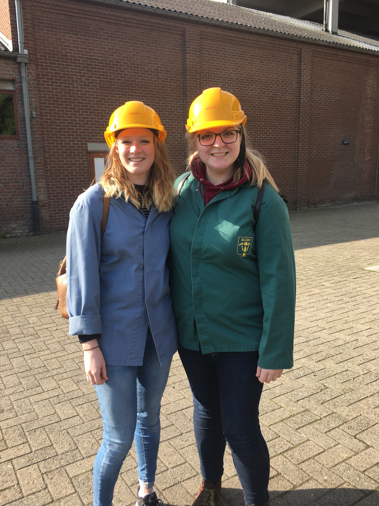
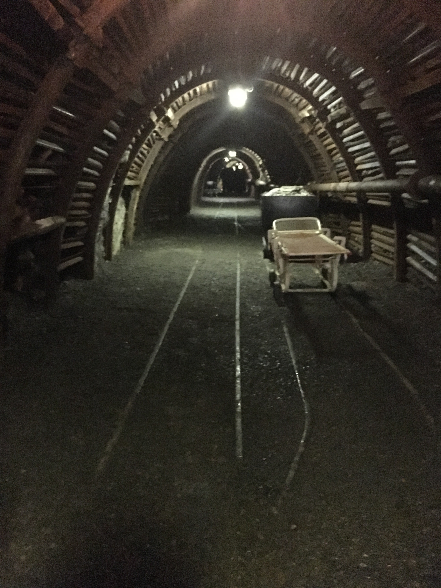
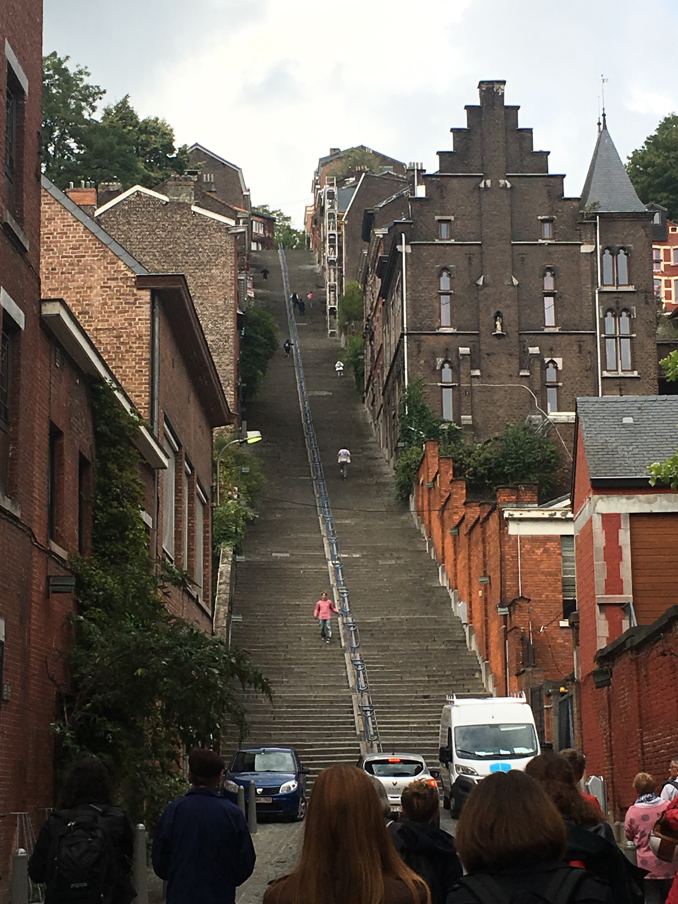

Last Friday (22/09/17) was exciting because my department (Département de Traduction et Interprétation) put together a free trip for all the Erasmus students! The only downside was that the bus left from our campus building at 8am which meant I had to be up pretty early to get there in time. This didn't match well with the fact that the biggest Erasmus party so far was at a club called 'Bloody Louis' on Thursday night and those who made it until 7am got free breakfast... I decided to sit this party out because I knew I wouldn't be able to function all day with such little sleep! Plenty others were more adventurous than I was and went to both but I think they were pretty done by the time we got the bus back to Brussels. The bus journey lasted around an hour and a half to Blègny Mine where we were split up into groups to go down into the actual mine! This is one of only 4 mines in Europe where tourists can go down the original mine shaft to both 30 and 60 metres below ground. The rest of the mine isn't accessable due to flooding. We had to wear jackets and protective helmets before going into the elevator, where it was pitch black for the entire descent! Thankfully there were electric lights put in for the tourists once we reached the bottom.  Our tour guide was lovely and she spoke slowly so that we could learn all about the history of the mine in French. After taking the lift down to 30 metres below ground, we had to walk down a very wet and slippery staircase to descend another 30 metres. It was quite scary, and learning about the conditions that people used to have to work in was very sad. They had to spend a minimum of 8 hours in the mine at a time. Whereas, I was definitely ready to come back up after half an hour! It was also very cold, but that was due to the system in place to circulate air throughout the mine.  After seeing the mine, we took the bus for another 30 minutes into Liège where we went on a guided tour. Liège is a very beautiful town and has the biggest staircase I've ever seen!  We didn't actually climb the 300+ steps but went another way to get some beautiful views over the town. My group also asked the tour guide to take us past a waffle shop! After the tour we had a little bit of free time to wander around before getting the bus back to Brussels. All in all, it was a great day out and I really enjoyed getting to know some more people from my course and exploring more of Belgium! À bientôt!